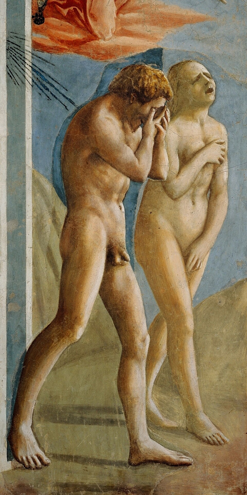

Adam and Eve — When innocence becomes shame

Masaccio paints neither the serpent nor the forbidden fruit, not even the temptation. He chooses the moment after: when everything has already been lost.
Adam hides his face. Eve gives voice to her anguish. Two responses to the same sentence: one turns inward, the other exposes her grief to the world.
The painter moves away from idealised images of the first humans. Their bodies have weight, their feet meet the ground, and light models their muscles and casts their shadows.
What strikes us is no longer simply the biblical transgression, but the painful awakening of self-awareness.
And there is a paradox: at the very moment Adam and Eve lose paradise, Masaccio gives them an extraordinary humanity.
Biblical source: Genesis 3:22–24 — The expulsion from the Garden of Eden. For the complete account: Genesis 3:1–24.